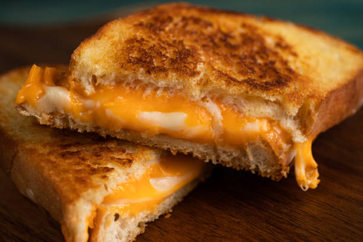

Grilled Cheese

Description
Grilled cheese is a warm, gooey American staple. Best served warm with tomato soup.
Ingredients
- 2 slices of bread or your choice
- 1 slice of your favorite type of cheese
- 1 Tbsp of butter
Directions
- Heat a grill pan or skillet over medium-low heat.
- While the pan is waring, butter one side of both slices of bread.
- Once the pan is warm, put one slice of bread, butter side down, on the pan.
- Layer your cheese on top of the bread. Place the remaining slice of bread, butter side up, on top of the cheese.
- Grill the sandwich until the bottom slice of bread is golden brown, then flip. Continue grilling until the other slice is also golden brown.
- Remove from heat, and cut in half before serving.
Home